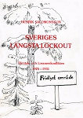
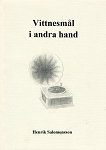
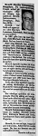
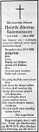

Henrik Alexius Salomonsson
Författare, Journalist. Blev 62 år.
| Född: | 1930-03-14 Lossmen, Kalvträsk fs, Burträsk sn. [1] |
|---|
| Död: | 1992-04-26 Bergsholmen, Skellefteå, Sankt Olovs fs, Skellefteå kn. [2] |
|---|
| Vigsel: | 1961-09-30. [3] |
|---|
| Levde: | 1965 Lossmen, Kalvträsk fs, Burträsk kn. [1] |
|---|
| Levde: | 1969 Sankt Olov fs, Skellefteå stad. [4] |
|---|
| Levde: | 1980 Ursviken, Sankt Örjans fs, Skellefteå kn. [1] |
|---|
| Levde: | 1991 Stg 3404, Bergsholmen, Sankt Olovs fs, Skellefteå stad. [3] |
|---|
| Barn: |
|---|
| Eric Eyvind Salomonsson (1963 - ) |
| Maria Christina Salomonsson (1965 - ) |
| Anna Gabriella Salomonsson (1969 - ) |
Noteringar
Henrik Salomonsson var född och uppväxt i Lossmen, övre Sävarådalen. I sin ungdom arbetade han, som många andra, i skogen. En kort period i slutet av 1950-talet jobbade han på Norra Västerbotten. Där var han också vikarie några somrar. I början av 1960-talet arbetade han som lokalredaktör för Västerbottens Folkblad i Storuman samt NSD i Jokkmokk och Luleå. År 1966 fick han en tjänst på Västerbottens Folkblad i Skellefteå där han arbetade fram till sin död.
Källa: Hustru Kerstin Salomonsson förmedlat av dottern Maria.
BÖCKER
VITTNESMÅL I ANDRA HAND, Salomonsson, Henrik, 1995, 114 sidor.
Utges postumt av Anna Salomonsson och säljes genom Maria Salomonsson, Hagtornsgatan 33, 932 37 URSVIKEN .
Boken är fylld med berättelser, skisser, notiser och händelser från Västerbottens inland, alla med stark verklighetsbakgrund. Några uppslag till dem är hämtade från Umeälvens dalgång och från Norsjö socken, men nästan alla härrör från övre Sävarådalen" (Ur författarens inledning.)
Tiden är sent 1800-tal, och tidigt 1900-tal, en hård och karg tid för många människor. I novellsamlingen är det främst dessa vi får följa. Vi ser ögonblicksbilder ur deras vardag som utspelade sig för flertalet decennier, och i vissa noveller för mer än ett sekel, sedan. Här återges dels de svåra levnadsförhållandena man levde under och fattigdomens alla men, dels speglas värmen, humorn och den kamratanda som var ett måste för att tillvaron skulle vara uthärdlig. Många ansikten tecknas inför oss, arbetare och arbetsgivare, strejkbrytare och krigsveteraner, gamla och unga. I fokus står dock hela tiden de fattiga och författaren klargör tidigt att det är hos dem hans sympatier ligger.
Förutom de verklighetsförankrade berättelserna ingår i samlingen även en och annan skröna, som muntligt vandrat och levt kvar i trakterna. Då, liksom nu, blandades allvar med skratt. Även skrönor och mer eller mindre påhittade berättelser utgör en del av det rika arv som är våra rötter. Ännu lever människor som minns den tidens alla inslag; som minns leendena, sången och dragspelsmusiken men även orättvisorna och kampen för brödet. Ännu lever generationen som har starka spår från ett yngre 1900-tal. Tidsgapet är inte större än så. Anna Salomonsson, dotter.
SVERIGES LÄNGSTA LOCKOUT - Ekträsk och Lossmenkonflikten 1925-1931, Salomonsson, Henrik, 1987. 67 sidor.
Sveriges längsta lockout vill berätta om varför det uppstod så starka och oftast mycket hätska motsättningar mellan arbetare och arbetsgivare på 1920- och 30-talet i skogsbygder som Ekträsk och Lossmen i övre Sävarådalen. Skogsarbetarna organiserade sig där syndikalistiskt 1924.
Skogsbolagens och kronan slog omedelbart till - inga syndikalister skulle få arbete, de fråntogs i stort sett alla utkomstmöjligheter. Fakta talar om hur människor förödmjukades.
"Jag ska svälta er till mina fötter" är ett dokumenterat yttrande, som en av Sandviksbolagets faktorer deklarerade vid flera tillfällen.
Den arbetsgivarstyrda "Arbetets frihet", sedermera en halvnazistisk organisation, dök upp i utkanten av konfliktområdet. Arbetsgivarna värvade strejkbrytare, som skyddades av polis.
Utvecklingen kunda bara bli en - kollisioner mellan de arbetslösa syndikalisterna och strejkbrytarna. Ett 20-tal syndikalister, dömdes att "sitta inne", därför att de beträtt fridlyst område. Henrik Salomonsson, författare till denna lilla krönika är född och uppvuxen i Lossmen.
Ur förordet: "Tidigare generationer Lossmenbor hade av Sandviksbolaget genom en bulvan berövats sina skogsmarker och då fråntagits en så viktig näring som jakträtten på storvilt, och under konflikten också all småviltsjakt. De stod nu inför ett avgörande - antingen en stupid undergivenhet eller revolt. De valde det senare. Därför var striden för en del av dem också ett uppror mot överheten, som de främst såg förkroppsligad i bolagets företrädare."
___________________________________________________________________________
Se också länken:
sv.wikipedia.org/wiki/Lossmen-Ektr%C3%A4sk-konflikten
___________________________________________________________________________
Noveller
Henrik Salomonsson skrev också noveller, som enligt uppgift från den efterlevande änkan ska ha publicerats i Kommunalarbetaren, Svenska Dagbladet, Provins, samt eventuellt i Sia och Arbetaren. En novell "Fasters Avsked" finns också i boken "Röster i Västerbotten" - en antologi av Åke Lundgren (2003) (ISBN 91-7221-318-3).
Personhistoria
| Årtal | Ålder | Händelse |
|---|
| 1930 |
|
Födelse 1930-03-14 Lossmen, Kalvträsk fs, Burträsk sn [1] |
| 1930 |
3 mån |
Makan Kerstin Signe Götilda Mörtsell föds 1930-07-09 Mörttjärn 1, Malå fs, Malå sn [5] |
| 1931 |
1 år |
Systern Astrid Linnea Salomonsson föds 1931-10-27 Lossmen, Kalvträsk fs, Burträsk sn [6] |
| 1933 |
3 år |
Systern Elsy Charlotta Salomonsson föds 1933-05-12 Lossmen, Kalvträsk fs, Burträsk sn [7] |
| 1935 |
5 år |
Systern Elma Albertina Salomonsson föds 1935-05-10 Lossmen, Kalvträsk fs, Burträsk sn [8] |
| 1938 |
8 år |
Systern Kerstin Maria Salomonsson föds 1938-08-29 Lossmen, Kalvträsk fs, Burträsk sn [7] |
| 1961 |
31 år |
Vigsel Kerstin Signe Götilda Mörtsell 1961-09-30 [3] |
| 1963 |
33 år |
Sonen Eric Eyvind Salomonsson föds 1963-09-03 Stensele fs, Stensele kn [1] |
| 1965 |
|
Levde Kerstin Signe Götilda Mörtsell 1965 Lossmen, Kalvträsk fs, Burträsk kn [1] |
| 1965 |
35 år |
Dottern Maria Christina Salomonsson föds 1965-07-02 Lossmen, Kalvträsk fs, Burträsk kn [1] |
| 1969 |
|
Levde Kerstin Signe Götilda Mörtsell 1969 Sankt Olov fs, Skellefteå stad [4] |
| 1969 |
38 år |
Dottern Anna Gabriella Salomonsson föds 1969-02-20 Sankt Olov fs, Skellefteå stad [1] |
| 1980 |
|
Levde Kerstin Signe Götilda Mörtsell 1980 Ursviken, Sankt Örjans fs, Skellefteå kn [1] |
| 1980 |
50 år |
Fadern Edvin Alexus Salomonsson dör 1980-03-15 Lossmen, Kalvträsk fs, Skellefteå kn [9] |
| 1991 |
|
Levde Kerstin Signe Götilda Mörtsell 1991 Stg 3404, Bergsholmen, Sankt Olovs fs, Skellefteå stad [3] |
| 1992 |
62 år |
Död 1992-04-26 Bergsholmen, Skellefteå, Sankt Olovs fs, Skellefteå kn [2] |
Dokument
Källor
| [1] | Mtl Västerbottens län 1981 |
| |
| | |
| [2] | RTB 92 / SPAR 92 / SPAR 95 |
| |
| | |
| [3] | Mantalslängd 1991, Västerbottens län |
| |
| | |
| [4] | Mtl Västerbottens län 1971 |
| |
| | |
| [5] | Malå (AC) C:4 (1924-1938) 71/1930 Bild 930 / sid 85, AIIa:2b (1920-1946) Bild 2890 / sid 581 |
| |
| | |
| [6] | Mtl Värmlands län 1981 |
| |
| | |
| [7] | Mtl Stockholm län 1981 |
| |
| | |
| [8] | Mtl Örebro län 1981 |
| |
| | |
| [9] | RTB 80 / SPAR 80 |
| |
|
|
(tidigt 1980-tal). Henrik Salomonsson, journalist på Västerbottens Folkblad och författare
Foto: Martin Lindqvist
|
| |
|  |
1987. Henrik Salomonsson, författare
Sveriges längsta lockout, Ekträsk- och Lossmenkonflikten 1925-1931, (1987)
|
| |
|  |
1995. Henrik Salomonsson, författare
"Vittnesmål i andra hand" gavs ut postumt, (1995.)
|
| |
|  |
1992-04-29. Henrik Salomonsson
Norra Västerbotten
|
| |
|  |
1992-04-29. Henrik Salomonsson
Norra Västerbotten
|
|
{kind=link}
{kind=link}
{kind=link}
{kind=link}
{kind=link}